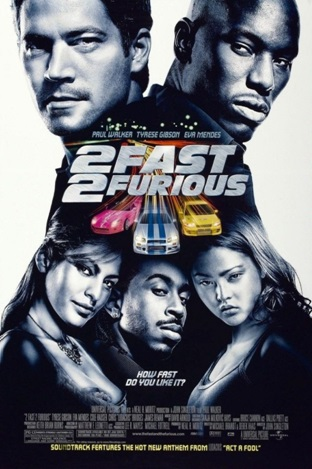
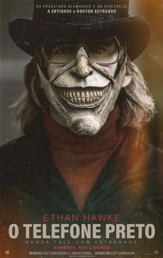
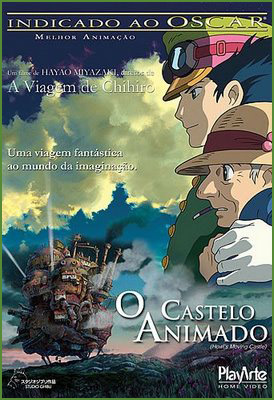

Mais velozes, mais furiosos é "mais engraçado".
Mas, é também "menos inteligente", pois é lotado de
clichês, não apresenta surpresas para o público,
nem tampouco as boas "atuações" dos carros do seu
filme original. Mas isso não quer dizer que a ação
não seja ótima, que os carros não sejam rápidos,
nem que a diversão não seja garantida.
ANO:2003
DIREÇÃO:John Singleton

O Telefone Preto é a adaptação de um conto já conhecido
de 2005, presente na publicação Fantasmas do Século XX.
Com a modernidade da história já presente no conto,
o longa mostra como um aparelho de telefone foi usado
para uma comunicação benéfica com os mortos.
ANO:2022
DIREÇÃO:Scott Derrickson

O Castelo Animado é, antes de qualquer outra coisa,
uma obra mágica! A história se preocupa em preservar
o lado lúdico das coisas, mesmo com temas pesados
sendo expostos para as crianças.
As cenas usam cores vivas para manter o público
sempre ciente de que aquilo ainda é uma animação,
e o tom que poderia ser sombrio é redirecionado,
e vemos experiências positivas sendo tiradas de
situações de crise.
ANO:2004
DIREÇÃO:Hayao Miyazaki